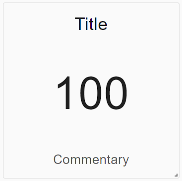
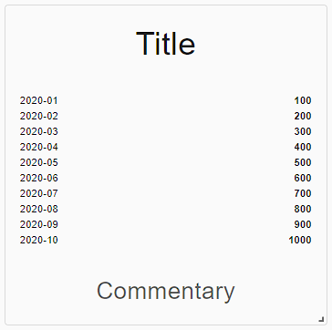
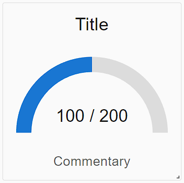
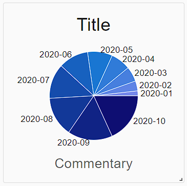
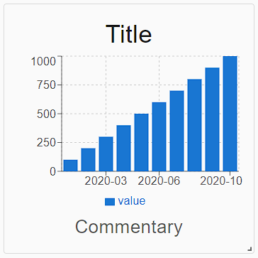
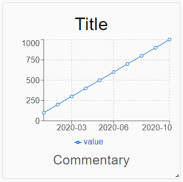

Kpi dasbhoard
Kpi dashboards allows you to visualize data coming from database views (data sources) in a pleasant and efficient way. They are fully customizable so that they can be tailored to any specific needs.
Dashboard layout
Each dashboard is made up of a 4 x 8 grid where widgets can be placed into. Each widget can be moved and sized as desired within the boundaries of the dashboard by a factor of 1 square tile (i.e. a cell within the grid).
Dashboard configuration
Widgets can be added and configured through the kpi dashboard's context menu, accessible with a right click. The only actions that cannot be taken on the dashboard's interface directly are creating and deleting dashboards. Those can be perfomed through the dedicated settings menu, accessible in Settings > Views > Kpi dashboards.
Data sources
A data source is a database view which has been configured in a specific way to be compliant with the kpi dashboard's requirements on loading data.
Requirements
To use a view as a data source, it should at least have 2 columns, where one of them holds numerical values. This is because the widgets use 2 columns from the view as follows:
- 1 column for numerical data (
value_col) - 1 column for labelling the data (
label_col)
Configuring a view as a data source
To configure a view as being a data source, you have to add a database comment on the view like the following:
COMMENT ON VIEW <schema_name>.<view_name> IS 'KPI_DATA_SOURCE';
COMMENT ON COLUMN <schema_name>.<view_name>.<numerical_values_column_name> IS 'KPI_DATA_SOURCE_VALUES';
COMMENT ON COLUMN <schema_name>.<view_name>.<labels_column_name> IS 'KPI_DATA_SOURCE_LABELS';
where <schema_name>, <view_name>, <numerical_values_column_name>,<labels_column_name> have to be replaced with their actual values.
Make sure that
<numerical_values_column_name>and<labels_column_name>match the EXACT name of the columns from the view. Otherwise, the database won't detect it as a valid data source.
Multiple data sets
For some widgets like the Bar Chart or the Line Chart, it may be desirable to plot more than 1 data set on the graph. This is supported, and requires that the value_col holds values of an array type. Then, the values at the same index in the array values across rows will be considered as one dataset.
e.g.
value_col | label_col |
----------------|-----------|----
[0 , 1] | 'val 1' |
----------------|-----------|----
[2 , 3] | 'val 2' |
----------------|-----------|----
[4 , 5] | 'val 3' |
In this example, the values 0, 2, 4 are considered to be in the same (first) data set, and 1, 3, 5 in the same (second) data set.
Widgets
A widget is a mini-view which displays data from a selected data source in a specific way.
Mandatory configuration
For a widget to work, it needs a minimum of two things configured (both via the context menu):
Generic attributes of widgets
Each widget can have the following attributes:
- Title: title of the widget (displayed at the top)
- Commentary: commentary on the widget (displayed at the bottom)
- Color: main color of the widget
- Unit: unit of measure
All attributes are configurable through the context menu of the kpi dashboard
Widget Types
Here are catalogued all the available widget types:
Single Number Widget

Features
Displaying a single numerical value.
Data source requirements
Requires the data source view to have at least 1 value (row). If the data source has more than one value, the first one will be picked and the rest will be discarded.
This makes is possible to design the view so that it is ordered in such a way that the desirable value to display is always the first one being displayed.
The configured label column is not used.
Text List Widget

Features
Displays all the values and label pairs from the data source in a vertical list
Data source requirements
No particular requirements or restrictions.
Gauge Widget

Features
Displays a value as a progress gauge.
Data source requirements
Requires the data source view to have at least 1 value (row), but preferably 2. The first value is used as the actual value, whereas the second one is used as the total. If only one value is provided, then the first value will be considered over 100.
The configured label column is not used.
Pie Chart Widget

Features
Displays all the values of the data source in a pie chart with a color gradient and labels on the outside of each slice.
When hovering over a slice, a tooltip will display it's label and value.
Data source requirements
No particular requirements or restrictions.
Bar Chart Widget

Features
Displays all the values of the data source in a bar chart where the values are written on the y-axis and the labels on the x-axis.
When hovering over a bar, a tooltip will display it's label and value.
Data source requirements
No particular requirements or restrictions.
Line Chart Widget

Features
Displays all the values of the data source in a line chart where the values are written on the y-axis and the labels on the x-axis.
When hovering over a point, a tooltip will display it's label and value.
Data source requirements
No particular requirements or restrictions.